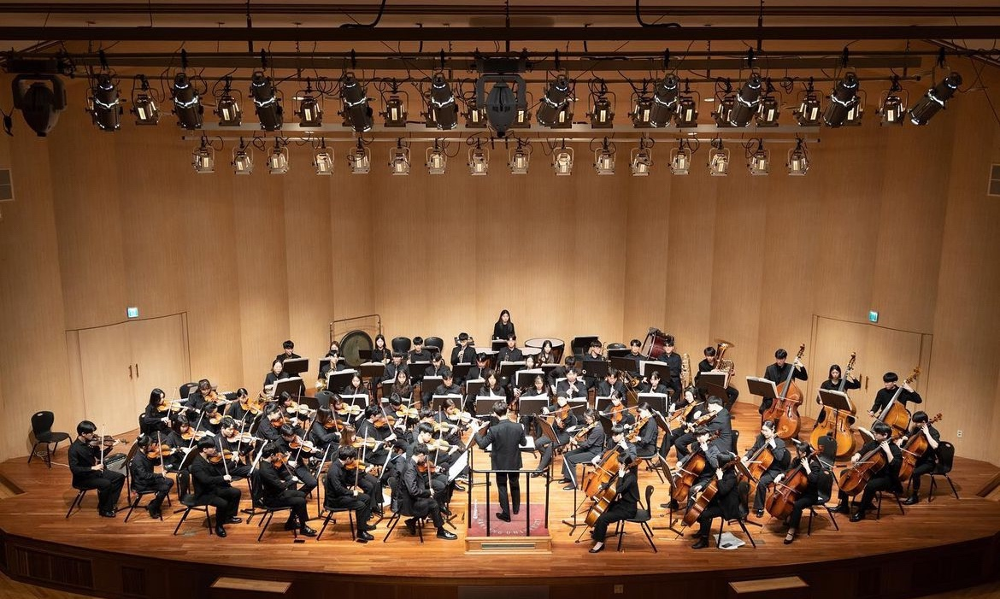
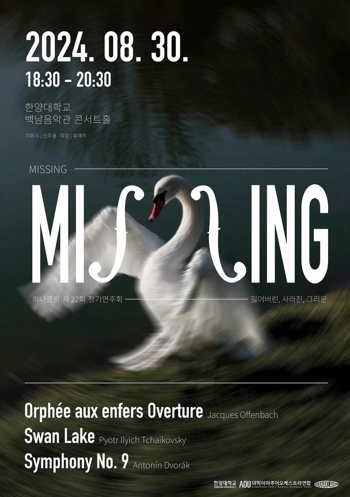
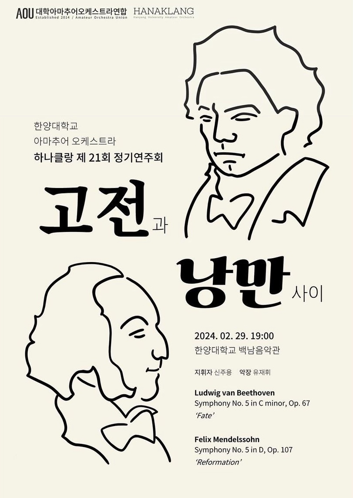
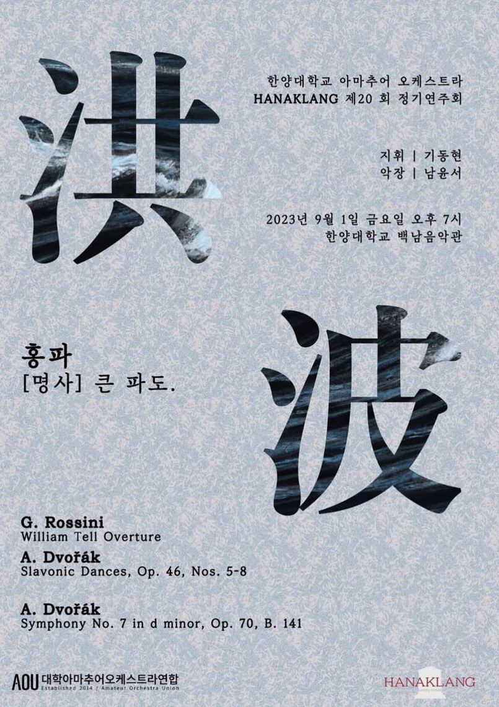
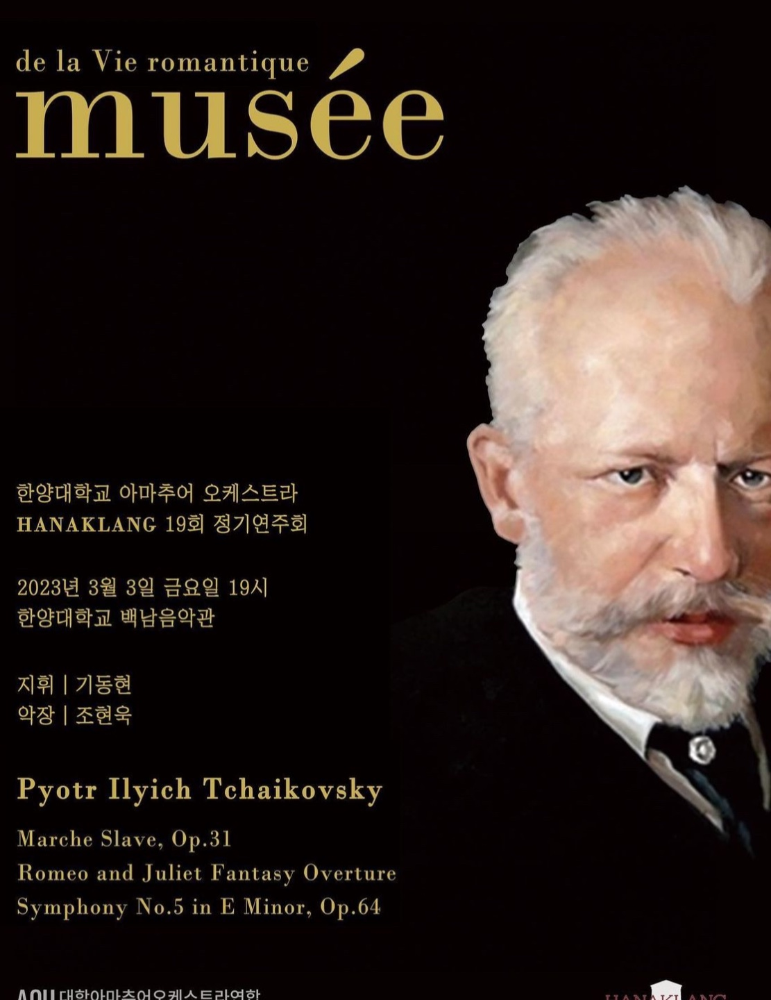
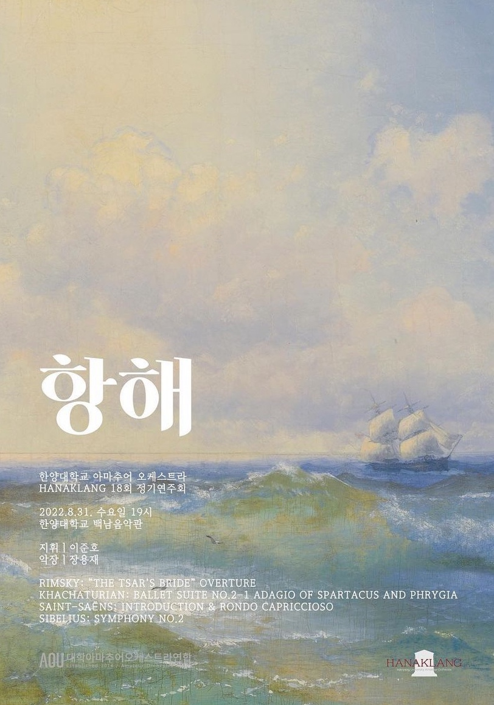

“음악을 통해 하나로 어우러지는 동아리"
한양대학교 아마추어 오케스트라 동아리 하나클랑(HanaKlang)은 2003년에 창단되어,
음악을 사랑하는 학생들이 모여 클래식 음악을 연주하는 중앙동아리입니다.
'최상의 음'을 뜻하는 'A-Klang'과 '한양'의 'Han'이 결합된 이름으로,
음악을 통해 하나로 어우러진다는 의미를 담고 있습니다.
매주 목요일 오후 6시에 정기 연습을 진행하며,
정기 연주회와 다양한 공연을 통해 음악적 열정을 나누고 있습니다.
악기 연주 경험이 없는 초보자부터 숙련자까지 모두 참여할 수 있으며,
음악을 통해 단원 간의 유대감을 형성하고 있습니다.
하나클랑은 한양대학교에서 가장 인원이 많은 동아리 중 하나로 성장하였으며,
학교의 크고 작은 행사에서도 활발히 활동하고 있습니다.
음악을 사랑하는 한양인이라면 누구나 함께할 수 있는 열린 동아리입니다.
“음악을 통해 하나로 어우러지는 동아리"
한양대학교 아마추어 오케스트라 동아리 하나클랑(HanaKlang)은 2003년에 창단되어,
음악을 사랑하는 학생들이 모여 클래식 음악을 연주하는 중앙동아리입니다.
'최상의 음'을 뜻하는 'A-Klang'과 '한양'의 'Han'이 결합된 이름으로,
음악을 통해 하나로 어우러진다는 의미를 담고 있습니다.
매주 목요일 오후 6시에 정기 연습을 진행하며,
정기 연주회와 다양한 공연을 통해 음악적 열정을 나누고 있습니다.
악기 연주 경험이 없는 초보자부터 숙련자까지 모두 참여할 수 있으며,
음악을 통해 단원 간의 유대감을 형성하고 있습니다.
하나클랑은 한양대학교에서 가장 인원이 많은 동아리 중 하나로 성장하였으며,
학교의 크고 작은 행사에서도 활발히 활동하고 있습니다.
음악을 사랑하는 한양인이라면 누구나 함께할 수 있는 열린 동아리입니다.





2003 한양대학교 HANAKLANG 창단
2018 제 15회 정기연주회
2018.09.07 지휘 | 이은구 악장 | 나현덕
2019 제 16 · 17회 정기연주회
2019.03.08 지휘 | 김성민 악장 | 박지수 협연 | 박지수
2019.09.06 지휘 | 이만열 악장 | 이동수
2022 제 18회 정기연주회
2022.08.31 지휘 | 이준호 악장 | 장용재
2023 제 19 · 20회 정기연주회
2023.03.03 지휘 | 기동현 악장 | 조현욱
2023.09.01 지휘 | 기동현 악장 | 남윤서
2024 제 21 · 22회 정기연주회
2024.02.29 지휘 | 신주용 악장 | 유재휘
2024.08.30 지휘 | 신주용 악장 | 유재휘